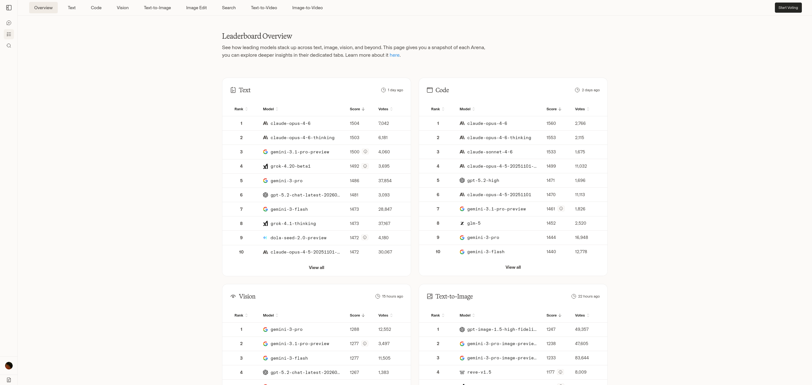
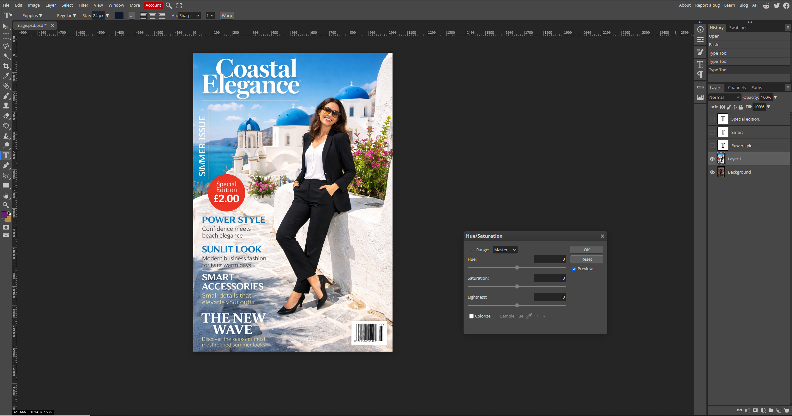
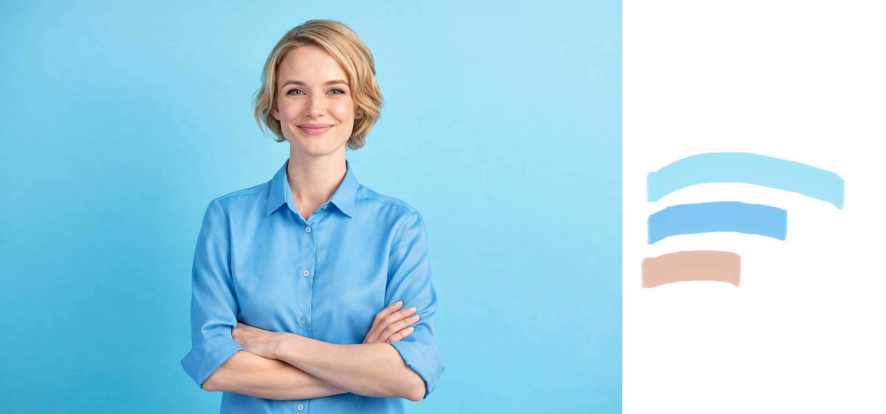
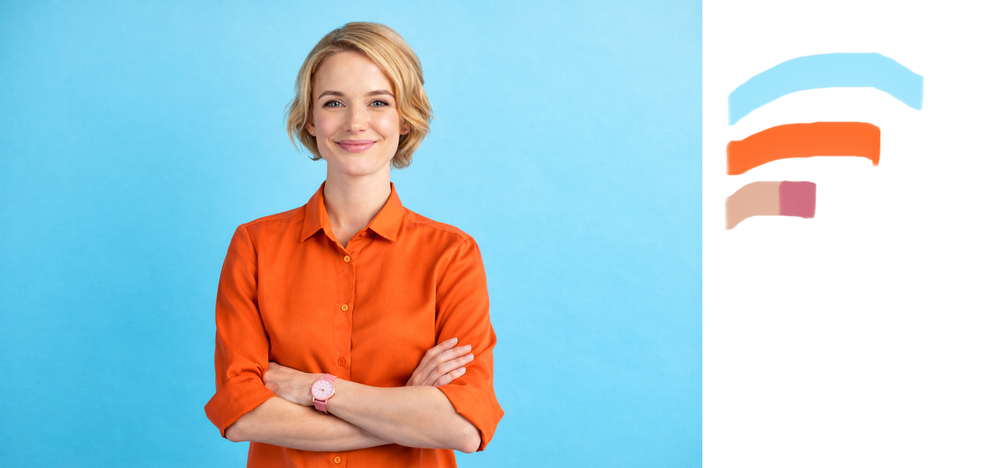
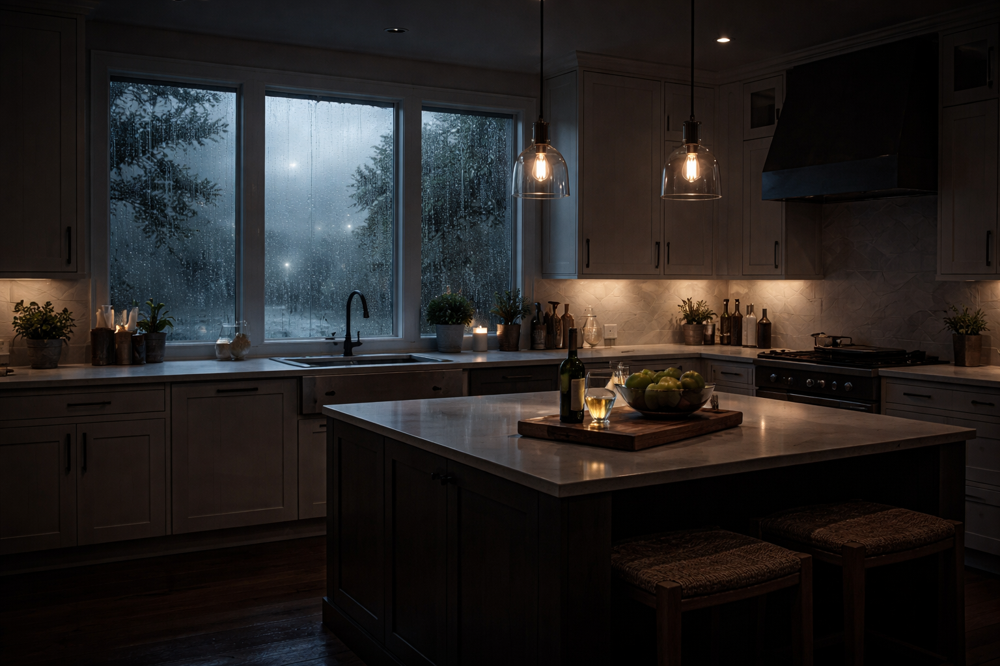
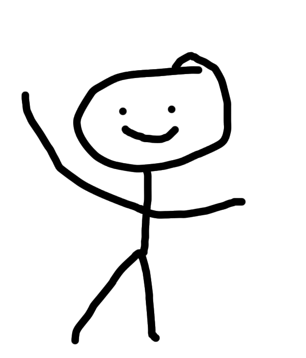
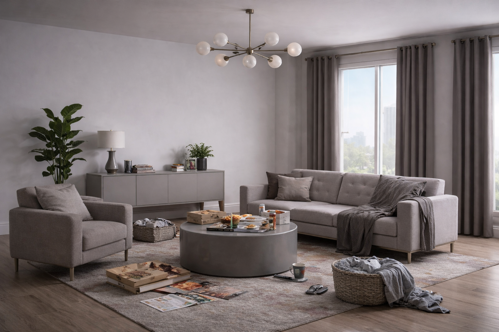
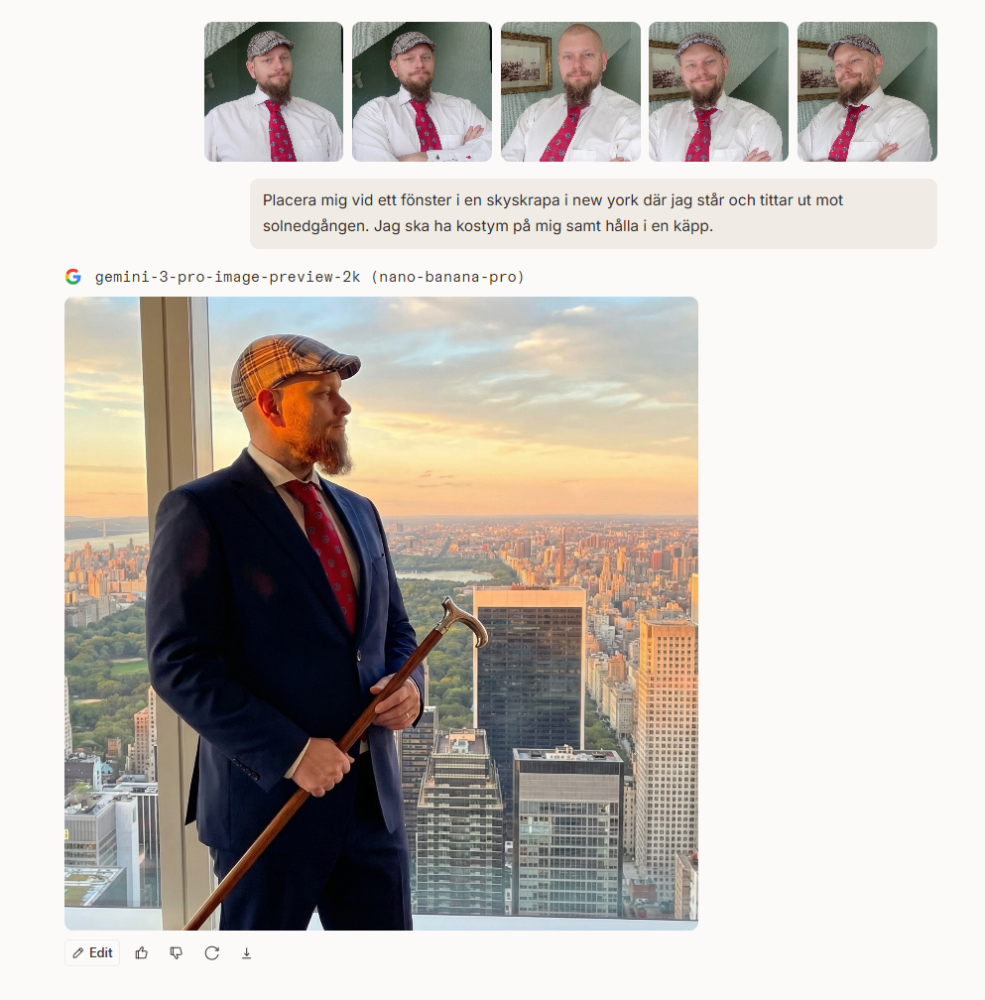
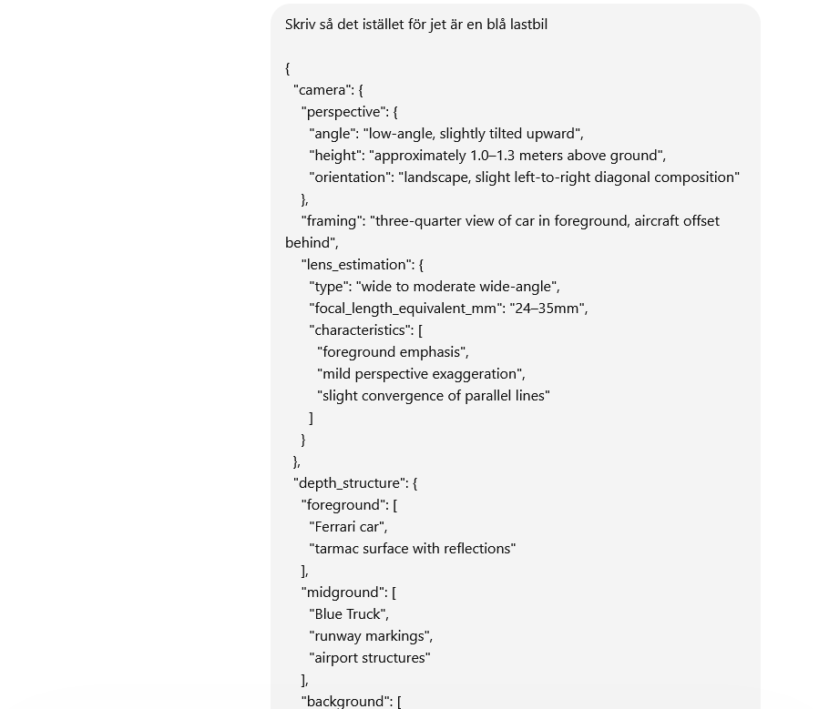
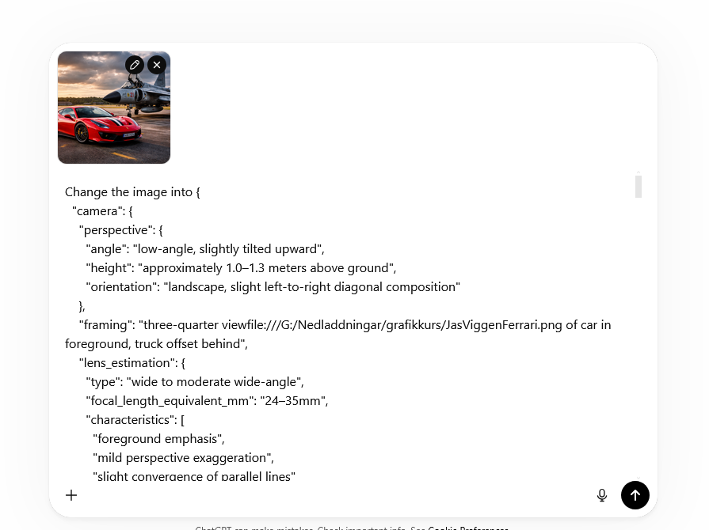

Andreas Jansson
Civilekonom i grunden med långvarigt teknikintresse. De senaste åren har jag satsat fullt ut på AI och arbetat praktiskt med allt från finjustering av modeller till produktion av grafiskt material och texter.
Arbetar i dag med IT och AI-konsultation samt med att hjälpa organisationer att använda AI för kodning, grafik, analys, artikelskrivande och filmskapande. Brinner för folkbildning och för att lära ut det jag själv tycker är roligt och användbart.
Har tidigare föreläst hos bl.a. ALMI Företagspartner, Folkuniversitetet, Medborgarskolan och Vuxenskolan.
Kursens upplägg
Kursen består av två tillfällen à 1,5 timme, klockan 19.00-20.30, med 10 minuters paus mellan 19.50 och 20.00.
Ställ frågor löpande under kursen. Ju fler frågor, desto bättre. Kursen är tänkt att vara levande och dialogbaserad.
Under genomgångarna finns kortare övningsmoment där ni under några minuter får utföra en praktisk uppgift för att direkt testa det vi går igenom.
Det finns även möjlighet att frivilligt lämna in en hemuppgift där ni skapar olika bilder för att öva vidare på det ni lärt er under kursen.
Ni är alltid välkomna att mejla mig frågor under kursens gång.
Jag har designat den här kursen som om det vore en kurs jag själv hade velat ge till mig själv.
Målet är att lyfta er till nästa nivå.

Vad ni kommer att få för kunskaper och färdigheter efter kursen
Efter kursen kommer ni att kunna skapa grafik och redigera bilder med hjälp av AI. Det gör att ni kan bli en extra tillgång på er arbetsplats(bli go-to personen när det kommer till AI) eller stärka er roll som företagare. Förhoppningsvis kan det leda till högre lön, bättre uppdrag eller större avkastning över tid.
Driver ni eget bolag får ni verktyg som gör det möjligt att nå fler kunder. Grafik kan skapa en wow-effekt och bidra till att kunder får större förtroende för ert företag. Samtidigt kan ni arbeta mer effektivt och minska kostnader för reklam, marknadsföring och grafisk produktion.
Ni kommer också att kunna som grafiker kunna likt konstnärer förmedla idéer, tankar och koncept visuellt på ett helt nytt sätt. AI gör det möjligt att snabbt gå från tanke till bild och att testa, justera och utveckla idéer utan långa omvägar.
Ni får dessutom verktyg och trygghet att använda AI på ett lekfullt och tillgängligt sätt, så att ni kan skapa roliga och kreativa bilder utan krav på förkunskaper. Kunskapen går också enkelt att dela vidare till familj och vänner för gemensamt skapande.
Ni kommer även att kunna förmedla tankegods genom grafik som ni annars kanske inte haft tid eller ork att ta fram, men som är desto viktigare att kommunicera.
Som helhet ger kursen er större uttrycksfrihet, bättre verktyg och ökad handlingsförmåga.
Men oavsett vad jag tycker så är det ni som styr kursens riktning. Det är ni som styr kursen dock så ni bestämmer vad det är vi ska fokusera på.
Vad vill ni lära er?
7. Grundläggande prompting
En prompt är den instruktion du ger till en AI för att få den att utföra något. Det kan handla om att skriva text, skapa bilder eller redigera material. Prompten fungerar ungefär som att ge en grävmaskinist tydliga instruktioner om hur en grop ska grävas och med vilka mått. Ju tydligare instruktionen är, desto större är chansen att resultatet blir som du tänkt dig.
AI:n försöker alltid utföra det du ber den om, utifrån hur du formulerar din instruktion. Små skillnader i formulering kan därför ge stora skillnader i resultat.
Vi ska titta på två exempel.
Prompt för att generera en artikel
Här ser vi skillnaden mellan en vag och en tydlig instruktion.
Dåligt exempel: "Skriv en artikel om AI."
Bra exempel: "Du är en erfaren journalist. Skriv en lättläst artikel om kreativ AI för nybörjare, cirka 400 ord, med ett pedagogiskt språk och ett tydligt avslut. Nämn Nvidia planer på datacenter i rymden"
Prompt för att generera en bild
Här beskriver du istället vad som ska synas, hur det ska se ut och vilken känsla eller stil bilden ska ha.
Dåligt exempel: "En hund."
Bra exempel: "En glad golden retriever-valp som springer i en solig park, mjukt ljus, fotorealistisk stil."
6. Våra första verktyg
Chatgpt.com erbjuder gratiskonton, ni kan registrera er på https://chatgpt.com. Där kommer ni kunna generera texter och bilder gratis.
Som komplement till detta och på grund av mångfalden av möjligheter kommer vi också använda plattformen https://arena.ai/. Det är en webbplats som erbjuder en begränsad men kostnadsfri möjlighet att testa de senaste AI-modellerna. Syftet är att samla in data för att kunna skapa en ranking över vilka modeller som presterar bäst inom olika kategorier.
På plattformen finns både stängda, kommersiella modeller, såsom OpenAI ChatGPT, Googles Gemini och Anthropic Claude, samt öppna open source-modeller, till exempel DeepSeek.
Här kan ni generera texter, bilder och även video med hjälp av olika modeller, och samtidigt jämföra hur de presterar i praktiken. Plattformen ger också en översikt över vilka modeller som är starkast inom olika områden och användningsfall.
Vi ska nu lära oss att navigera på plattformen, eftersom vi kommer att använda den som ett centralt verktyg under kursen för att skapa bilder.
Vill att alla surfar in på denna nu om ni har möjlighet så ska ni få göra tester själva sen.

7. Byta modell kostnadsfritt
På arena.ai kan vi kostnadsfritt byta mellan modeller när våra kostnadsfria prompts för en modell förbrukats.
Det gör att ni kan fortsätta arbeta utan avbrott: växla bara modell och fortsätt med samma uppgift.
Photopea - bildredigering direkt i webbläsaren
Photopea är ett kraftfullt, kostnadsfritt verktyg för bildredigering som fungerar direkt i webbläsaren. Ni kan använda det för att justera färg, retuschera, lägga till text och arbeta i lager.
Det är särskilt användbart när ni vill finjustera AI-genererade bilder efter att de skapats.
I denna del ska vi titta på hur vi använder klonverktyget för att ta bort oönskade delar av en bild.
Vi kommer även att använda Auto-Blend Smart för att få en mjukare och mer naturlig sammanslagning i redigeringen.
Öppna verktyget på: https://www.photopea.com

Var inte rädd för att använda färger!
Här ser vi hur en tydlig accentfärg snabbt kan flytta fokus i bilden och skapa en starkare visuell signal.
Små färgval kan ge stor effekt: prova dig fram stegvis tills bildens hierarki känns rätt.


Praktiska övningar
Klicka på ett kort för att vända på det och se instruktionerna.
Övning 1
Klicka för att visaPrompting och textskapande
Syfte: Lära sig styra AI genom text, förstå iteration och efterredigering.
Deltagarna får uppdraget: Ni har blivit anlitade att skriva artiklar åt Torekovsmagasinet.
- Skriv en prompt i ChatGPT där AI ska skriva en artikel om grundlagsbytet i Sverige på 1970-talet.
- Läs igenom texten som skapas.
- Skriv en ny prompt där ni ber AI skriva om samma innehåll, men kortare och i klarspråk, anpassat för en bred allmänhet.
- Observera hur AI använder tidigare text och hur ni kan förändra innehållet steg för steg utan att börja om.
- Testa att justera tonen ytterligare, till exempel mer pedagogisk eller mer journalistisk.
Övning 2
Klicka för att visaBildskapande successiv prompting
Syfte: Förstå hur bilder byggs upp stegvis och hur promptformeln används.
- Skapa en bild av en åker.
- Be AI ändra åkern till gräs.
- Lägg till en röd stuga på gräset.
- Lägg till glada människor utanför stugan.
- Be att människorna ska bära rosa kepsar.
- Lägg till en bil utanför stugan.
- Ändra perspektivet (uppifrån, snett höger).
- Byt färg på bilen.
- Gör bilden fotorealistisk.
- Ändra tid på dygnet till kväll.
- Ändra stilen till tecknad.
- Ändra stilen till Picassos stil.
- Flytta scenen till Mars.
- Lägg till guldig text: "Boka din rymdsemester".
Promptformel: Subjekt, Handling, Miljö, Ljus/Kamera, Stil.
Övning 3
Klicka för att visaKommersiell poster
Syfte: Träna på att arbeta metodiskt i ett betalt uppdrag.
Scenario: Ni har fått i uppdrag att skapa en poster till en båtmässa som heter "Allt för sjön".
- Skapa först en bild utan någon text.
- När ni är nöjda med bilden, be AI lägga till mässans namn.
- Lägg därefter till mer text stegvis, till exempel datum eller plats, utan att förändra resten av bilden.
- Reflektera över varför det är viktigt att arbeta stegvis i kommersiella uppdrag.
Övning 4
Klicka för att visaBildredigering & förbättring
Syfte: Visa hur AI justerar befintligt material.
Del A: Objekt och miljö
- Utgå från bilen från tidigare övning.
- Ändra färg på bilen.
- Flytta bilen till New York.
- Gör bilden realistisk.
Del B: Ljussättning
Scenario: En mäklarfirma vill förbättra en bild.
Arbetssteg: Högerklicka på bilden nedan, välj Kopiera bild och klistra in den i AI-chatten för att modifiera den.

- Gör vädret ljusare utomhus.
- Justera ljuset i ett kök så det ser inbjudande ut.
Övning 5
Klicka för att visaPorträtt & personredigering
Syfte: Lära sig skapa professionella porträtt.
Välj referensbild: Ladda ner valfri bild nedan och använd den i övningen.
- Ladda upp den bild du valde.
- Be AI göra bilden till ett stilrent svartvitt porträtt.
- Be AI byta kläder på personen.
- Be AI ändra färgen på kvinnans kavaj till blå.
- Be AI att mannen håller upp en skylt med texten "AI-expert".
- Justera ljus och kontrast för ett professionellt uttryck.
Övning 6
Klicka för att visaBild till text och idé
Syfte: Koppla samman textinnehåll och bild.
- Be AI skriva en artikel på cirka 300 ord om AI-utvecklingen och datacenter i rymden.
- Texten ska vara så enkel att en 12-åring kan förstå den.
- När texten är klar, be AI skapa en bild som passar till artikeln.
- Reflektera över hur väl bilden förstärker innehållet.
Övning 7
Klicka för att visaSkiss till färdig bild
Syfte: Visa att teckningskunskaper inte krävs.
Referens: Titta på skissen nedan. Den visas som exempel och behöver inte laddas ner.

- Använd skissen ovan som visuell referens.
- Be AI tolka skissen och skapa en färdig bild.
- Justera stil, miljö eller uttryck vid behov.
Övning 8
Klicka för att visaFormat för sociala medier
Syfte: Förstå format och proportioner.
Genomgång av format:
- Facebook: 1:1, 1.91:1
- Instagram: 1:1, 4:5, 9:16
- TikTok: 9:16
Scenario: Marits Blommor
- Skapa en Facebook-banner som marknadsför rea på gula tulpaner.
- Anpassa bilden till rätt format.
- Reflektera över hur formatet påverkar uttrycket.
Övning 9
Klicka för att visaRedigera vardagsrum med AI (60/30/10)
Syfte: Träna bildredigering och färgbalans enligt 60/30/10-principen.
Referensbild: Använd bilden nedan som startpunkt.

- Städa bort allt stök i bilden.
- Skapa en tydlig 60/30/10-fördelning i färgerna.
- Välj dominant färg för väggar.
- Välj secondary-färg för möbler.
- Lägg accentfärg på små detaljer.
Exempelprompt: "Clean and declutter the living room. Use a soft light blue as dominant wall color, warm beige furniture as secondary color, and a strong orange accent for pillows and small decor. Keep the room modern and balanced."
Övning 10
Klicka för att visaDesigna hemsida med 60/30/10
Syfte: Översätta färgprincipen till layout för webb.
- Välj dominant bakgrundsfärg (60 %).
- Välj secondary-färg för sektioner eller kort (30 %).
- Välj accentfärg för knappar och länkar (10 %).
- Säkerställ tydlig kontrast för text och CTA-knappar.
Exempelprompt: "Design a modern website layout. Use a soft green as dominant background, light beige for content sections, and a strong dark blue accent for buttons. Keep it clean and minimal with clear contrast."
Finetuning utan finetuning (smart hack)
Du kan ofta få ett objekt att bli mer konsekvent utan riktig finetuning.
Ladda upp minst 5 bilder på samma objekt (gärna fler) från olika vinklar och i olika ljus.
Be t.ex. Gemini Nano Banana generera samma objekt i en ny scen, men behålla form, material och detaljer.
Iterera i små justeringar tills objektet känns konsekvent mellan bilderna.
Detta är ett praktiskt "smart hack" när du vill få liknande resultat snabbt utan att träna en egen modell.

Hitta arbete som frilansande grafiker
Börja lokalt: gå in på hemsidor hos företag i din närhet och se vilka som behöver bättre grafik, bilder eller innehåll.
Kontakta dem kort och tydligt och erbjud hjälp med att skapa eller förbättra deras visuella material.
Vill ni få utländska klienter kan ni också använda plattformar som Upwork, Fiverr och Freelancer.

Juridik kring AI-bilder
Normalt behöver du inte kreditera ChatGPT eller Gemini om du använder en AI-genererad bild, till exempel som bokomslag. Enligt användarvillkoren får bilderna i regel användas kommersiellt.
Upphovsrättsligt är huvudfrågan verkshöjd: i svensk och EU-rätt krävs tillräcklig originalitet och mänskligt skapande för att en bild ska få upphovsrättsligt skydd.
Om en bild är helt AI-genererad utan kreativt mänskligt bidrag når den ofta inte verkshöjd. Då finns normalt ingen upphovsrätt i bilden, vilket innebär att ingen upphovsman kan göra upphovsrättsliga anspråk och att flera i praktiken kan använda samma bild.
Om en människa däremot styr, redigerar och bearbetar bilden kreativt kan den mänskliga insatsen nå verkshöjd, och då kan upphovsrätt uppstå till den bearbetade bilden.
Kort sagt: Ingen kreditering krävs normalt, men AI-bilder saknar ofta upphovsrätt om de inte innehåller tillräckligt mänskligt skapande.
Informationen beskriver rättsläget i stora drag och är inte juridisk rådgivning.
Questions and Answers - upphovsrätt och AI-bilder
Klicka på ett kort för att se svaret.
Prejudicerande domslut (internationellt, per 5 mars 2026)
- USA, D.C. Circuit (18 mars 2025): Thaler v. Perlmutter fastslår att upphovsrätt kräver mänsklig upphovsman när AI-systemet anges som ensam skapare.
- USA, Supreme Court (2 mars 2026): certiorari nekades i mål 25-449, vilket lämnade D.C. Circuits linje gällande.
- EU-domstolen, C-5/08 Infopaq och C-145/10 Painer: etablerar originalitetskravet "author's own intellectual creation", dvs. mänskliga fria och kreativa val som grund för skydd.
Fråga 1
Vem har upphovsrätten?Vem har upphovsrätten om jag tar ett foto och sedan modifierar det med AI?
Upphovsrätten utgår normalt från originalfotot, alltså fotografen.
Om du tog fotot själv och använder AI som redigeringsverktyg (som Photoshop) är det i regel du som har rättigheterna.
Gör du egna kreativa bearbetningar kan även den nya versionen få skydd, om den når verkshöjd.
Vad gäller för AI-bilder 2026? I ChatGPT anger villkoren (1 januari 2026) att du äger outputen mellan dig och OpenAI. För Gemini/Google gäller att Google inte gör anspråk på äganderätt till genererat innehåll. Men i båda fallen måste du följa lag, tredje mans rättigheter och respektive licensvillkor.
Fråga 2
Vad betyder verkshöjd?Vad betyder verkshöjd och hur påverkar AI upphovsrätten?
Verkshöjd = tillräckligt självständigt och kreativt mänskligt skapande.
Ren AI-output utan mänskliga kreativa val saknar ofta upphovsrätt.
När du styr processen (promptar, väljer, redigerar) kan upphovsrätt uppstå genom din insats.
Fråga 3
Licensvillkor i AI-tjänsterVad händer om en AI skapar en bättre bild men inte ger bort rättigheterna?
Licensvillkoren styr användningen. Om rättigheter inte överlåts får du inte använda bilden fritt.
Det gäller även om bilden i sig saknar klassisk upphovsrätt.
Redigering i exempelvis Photoshop tar normalt inte bort avtalsvillkoren.
Fråga 4
Ny bild i annan AI?Kan man lösa problemet genom att mata bilden i en annan AI och generera en ny version?
Inte automatiskt. Om den nya bilden tydligt bygger på originalet kan den räknas som en bearbetning eller ett härlett verk.
Då kan originalets rättigheter fortfarande påverka vad du får göra.
Tumregel (2026): Ren AI-bild kan sakna upphovsrätt, men licensvillkor gäller fortfarande. AI som kreativt verktyg kan ge rättigheter till den som gör de kreativa valen.
Exempel
Bokomslag med AIExempel: bokomslag skapat med AI
Du kan ofta använda AI-bilder kommersiellt i bokomslag om tjänstens licens tillåter det.
OpenAI/ChatGPT och Google/Gemini (2026): normalt får du sälja materialet och tjäna pengar om du följer respektive villkor, och kreditering av OpenAI eller Google krävs normalt inte som standardkrav.
Kreditering av AI-tjänsten krävs ofta inte, men kan variera mellan plattformar.
AI-genererat material kan ibland likna befintliga verk. Därför bör materialet granskas och vid behov bearbetas för att minska risken för upphovsrättsintrång.
Kontrollera alltid villkoren för tjänsten innan publicering.
Prompt engineering för bilder
När man skriver prompts för AI-genererade bilder fungerar en enkel struktur ofta bäst. En praktisk checklista är att tänka i sex delar: motiv, handling eller form, miljö, stil, ljus och perspektiv.
Börja med motivet, alltså vad bilden ska föreställa. Beskriv därefter vad motivet gör eller hur det är placerat i scenen. Lägg sedan till miljön där bilden utspelar sig. Ange därefter stil eller medium, till exempel illustration, fotorealistisk bild eller akvarell. Fortsätt med ljussättning, som mjukt studioljus, morgonljus eller kvällsljus. Avsluta med perspektiv eller bildvinkel, till exempel närbild, vidvinkel, ovanifrån eller från låg vinkel.
Ett effektivt arbetssätt är att börja med en kort prompt som innehåller dessa delar i enkel form. Justera sedan en detalj i taget om resultatet behöver styras mer.
Exempel på en kort och öppen prompt:
“A modern city skyline at sunset.”
Denna typ av prompt ger modellen stor frihet att tolka scenen, välja arkitektur, färger och komposition.
Exempel på en mer detaljerad prompt:
“A modern coastal city skyline with glass skyscrapers and busy streets, evening atmosphere, photorealistic style, warm sunset light reflecting in the buildings, wide-angle view from a rooftop overlooking the harbor.”
Här styrs bilden tydligare genom att beskriva motiv, miljö, stil, ljus och perspektiv mer exakt.
Om du har en tydlig vision kan en mer detaljerad prompt fungera bäst. Om idén är mer öppen fungerar ofta en kortare prompt bättre, eftersom modellen då får större frihet att föreslå visuella lösningar. Därefter kan bilden förfinas stegvis genom att lägga till eller ändra detaljer i nya prompts.
Avancerat moment för de som vill bli proffs på redigering:
Ett effektivt sätt att arbeta mer precist är att låta AI generera en strukturerad JSON-beskrivning av en bild, så att du slipper formulera alla detaljer själv. Genom att använda denna metod får du en teknisk beskrivning av perspektiv, objekt och relationer som du sedan kan justera för att styra redigeringen mer exakt.
Arbetssteg:
- Ta en bild du vill redigera och kör prompten nedan i en AI-modell, till exempel ChatGPT, Gemini eller en modell via Arena.ai.
- Du får då ut en JSON-beskrivning av bilden med detaljer om perspektiv, objekt och struktur.
- Be sedan AI:n att ändra själva JSON-beskrivningen, till exempel så att jeten i scenen byts ut mot en blå lastbil.
- Justera innehållet i JSON-filen, till exempel position, storlek, material eller relationer mellan objekt.
- Du kan också be AI:n skriva själva ändringen i JSON-metadatan åt dig, till exempel att byta ut jeten mot en blå lastbil.
- Klistra sedan in den uppdaterade JSON:en tillsammans med originalbilden och be AI:n genomföra ändringarna.
- Vill du ändra fler delar i bilden, uppdatera motsvarande beskrivning i JSON-texten och kör igen.
På detta sätt ger du AI:n både en visuell referens i form av originalbilden och en strukturerad instruktion, vilket gör att ändringar kan göras mer kontrollerat samtidigt som övriga detaljer i bilden bevaras.
I praktiken kan du alltså först få ut JSON-strukturen, och sedan skriva något i stil med: "skriv så det istället för jet är en blå lastbil". AI:n kan då hjälpa dig att formulera eller uppdatera metadata innan du ber den generera den nya bilden.
En annan effektiv prompt är att skriva "Behåll allt i bilden och ändra bara XYZ". Det är ofta ett bra sätt att signalera att övriga detaljer ska lämnas orörda, så att du bara ändrar det du faktiskt vill påverka.
Prompt:
Analyze the image and output structured JSON including:
- camera perspective (angle, height, orientation)
- lens estimation (wide, normal, telephoto)
- depth structure (foreground, midground, background)
- spatial relationships between objects
- object-level metadata:
- position (relative coordinates)
- size (relative scale)
- material
- occlusion relationships
Focus on geometric and photographic interpretation, not just semantic description.


Materialet uppdateras löpande
Jag kommer successivt att uppdatera materialet ovan efter hand.
Mejla mig på a.jansson.2025@proton.me vid frågor och funderingar.